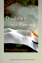
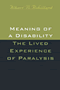

|
Toward
Solomon's Mountain
The Experience of Disability in Poetry
edited by Baird, Joseph L. and Deborah S. Workman
160 pp • Spring 1986
cloth 978-0-87722-416-7 |

|
Schooling
Without Labels
Parents, Educators, and Inclusive Education
Biklen, Douglas
210 pp • Fall 1991
paper 978-0-87722-876-9
cloth 978-0-87722-875-2 |
|  |
Disability and Passing
Blurring the Lines of Identity
edited by Brune, Jeffrey A. and Daniel J. Wilson
216 pp • 5.5x8.25 • Spring 2013
paper 978-1-4399-0980-5
cloth 978-1-4399-0979-9
|

|
On the Margins of Citizenship
Intellectual Disability and Civil Rights in Twentieth-Century America
Carey, Allison
286 pp • 6x9 • Fall 2009
paper 978-1-59213-698-8
cloth 978-1-59213-697-1
|

|
Dirty
Details
The Days and Nights of a Well Spouse
Cohen, Marion Deutsche, foreword by Marty Wyngaarden Krauss
224 pp • Fall 1991
paper 978-1-56639-426-0
cloth 978-1-56639-425-3
|

|
Final
Negotiations
A Story of Love, and Chronic Illness
Ellis, Carolyn
368 pp • 6x9 • Fall 1994
paper 978-1-56639-271-6
cloth 978-1-56639-270-9
|

|
Women
with Disabilities
Essays in Psychology, Culture, and Politics
edited by Fine, Michelle and Adrienne Asch
347 pp • 6x9 • Fall 1987
paper 0-87722-669-5
EAN 978-0-87722-669-7
cloth 0-87722-474-9
EAN 978-0-87722-474-7
|

|
The Disability Rights Movement
From Charity to Confrontation
Updated Edition
Fleischer, Doris Zames and Frieda Zames
360 pp • 7x10 • Fall 2011
paper 978-1-4399-0744-3
cloth 978-1-4399-0743-6
|

|
A
World without Words
The Social Construction of Children Born Deaf and Blind
Goode, David, foreword by Irving Kenneth Zola
336 pp • 5.5x8.25 • Fall 1994
paper 978-1-56639-216-7
cloth 978-1-56639-215-0
|
|
Home
Bound
Growing Up with a Disability in America
Irvin, Cass
232 pp • 6x9 • Fall 2003
paper 978-1-59213-220-1
cloth 978-1-59213-219-5
|

|
Cara
Growing with a Retarded Child
Jablow, Martha Moraghan
250 pp • Spring 1982
paper 978-0-87722-269-9
cloth 978-0-87722-255-2 |
 |
Barriers and Belongings
Personal Narratives of Disability
Edited by Jarman, Michelle, Leila Monaghan, and Alison Quaggin Harkin
286 pp • 6x9 • Fall 2016
paper 978-1-4399-1388-8
cloth 978-1-4399-1387-1
|
 |
Wheelchair Warrior
Gangs, Disability, and Basketball
Juette, Melvin and Ronald J. Berger
192 pp • 5.5x8.25 • Spring 2008
paper 978-1-59213-475-5
cloth 978-1-59213-474-8
|

|
Why
I Burned My Book and Other Essays on Disability
Longmore, Paul K.
288 pp • 6x9 • Spring 2003
paper 978-1-59213-024-5
cloth 978-1-59213-023-8
|
|
Music, Disability, and Society
Lubet, Alex
208 pp • 5.5x8.25 • Fall 2010
paper 978-1-4399-0026-0
cloth 978-1-4399-0025-3
|

|
Day
In, Day Out with Alzheimer's
Stress in Caregiving Relationships
Lyman, Karen A.
264 pp • 5.5x8.25 • Fall 1993
paper 978-1-56639-098-9
cloth 978-1-56639-097-2 |

|
The
Difference That Disability Makes
Michalko, Rod
208 pp • 6x9 • Spring 2002
paper 978-1-56639-934-0
cloth 978-1-56639-933-3
|

|
The
Two in One
Walking with Smokie, Walking with Blindness
Michalko, Rod
256 pp • 5.5x8.25 • Fall 1998
paper 978-1-56639-649-3
cloth 978-1-56639-648-6
|

|
Accessible Citizenships
Disability, Nation, and the Cultural Politics of Greater Mexico
Minich, Julie Avril
240 pp • 5.5x8.5 • Fall 2013
paper 978-1-4399-1070-2
cloth 978-1-4399-1069-6
|
 |
Meaning
of a Disability
The Lived Experience of Paralysis
Robillard, Albert B.
208 pp • 5.5x8.25 • Spring 1999
paper 978-1-56639-676-9
cloth 978-1-56639-675-2
|
 |
Don't Call Me Inspirational
A Disabled Feminist Talks Back
Rousso, Harilyn
224 pp • 5.25x9 • Spring 2013
paper 978-1-4399-0937-9
cloth 978-1-4399-0936-2
|

|
Having
Epilepsy
The Experience and Control of Illness
Schneider, Joseph W. and Peter Conrad
240 pp • Fall 1983
paper 978-0-87722-398-6
cloth 978-0-87722-318-4 |

|
From
Good Will to Civil Rights
Transforming Federal Disability Policy
Scotch, Richard K.
Second Edition
232 pp • 5.5x8.25 • Spring 2001
paper 978-1-56639-897-8
cloth 978-1-56639-896-1
|

|
The
Kennedy Family and the Story of Mental Retardation
Shorter, Edward
249 pp • 6x9 • Spring 2000
paper 978-1-56639-783-4
cloth 978-1-56639-782-7
|

|
A
Case About Amy
Smith, R. C., foreword by Frank G. Bowe
344 pp • 6x9 • Spring 1996
paper 978-1-56639-412-3
cloth 978-1-56639-411-6
|

|
I
Can't Remember
Family Stories of Alzheimer's Disease
Smoller, Esther Strauss, foreword by Kathleen O'Brien
136 pp • 7x10 • Fall 1997
cloth 978-1-56639-555-7
|

|
Incurably
Romantic
Stehle, Bernard F., afterword by Joseph Schneider
256 pp • Spring 1985
cloth 978-0-87722-307-8 |

|
Missed
Connections
Hard of Hearing in a Hearing World
Stenross, Barbara
139 pp • 5.5x8.25 • Spring 1999
paper 978-1-56639-682-0
cloth 978-1-56639-681-3
|

|
Engineering
Disability
Public Policy and Compensatory Technology
Tanenbaum, Sandra J.
184 pp • Spring 1986
cloth 978-0-87722-403-7 |

|
The
Feel of Silence
Tucker, Bonnie Poitras, foreword by Frederic Hafferty
232 pp • 6x9 • Fall 1995
paper 978-1-56639-352-2
cloth 978-1-56639-351-5
|
 |
Chang and Eng Reconnected
The Original Siamese Twins in American Culture
Wu, Cynthia
218 pp • 6x9 • Fall 2012
paper 978-1-4399-0869-3
cloth 978-1-4399-0868-6
|

|
Missing
Pieces
A Chronicle of Living with a Disability
Zola, Irving Kenneth, foreword by Nancy Mairs
258 pp • 5.8125x9 • Fall 2003
paper 978-1-59213-244-7
|
|
Socio-Medical
Inquiries
Recollections, Reflections, and Reconsiderations
Zola, Irving Kenneth
340 pp • Spring 1983
paper 978-0-87722-312-2
cloth 978-0-87722-303-0 |